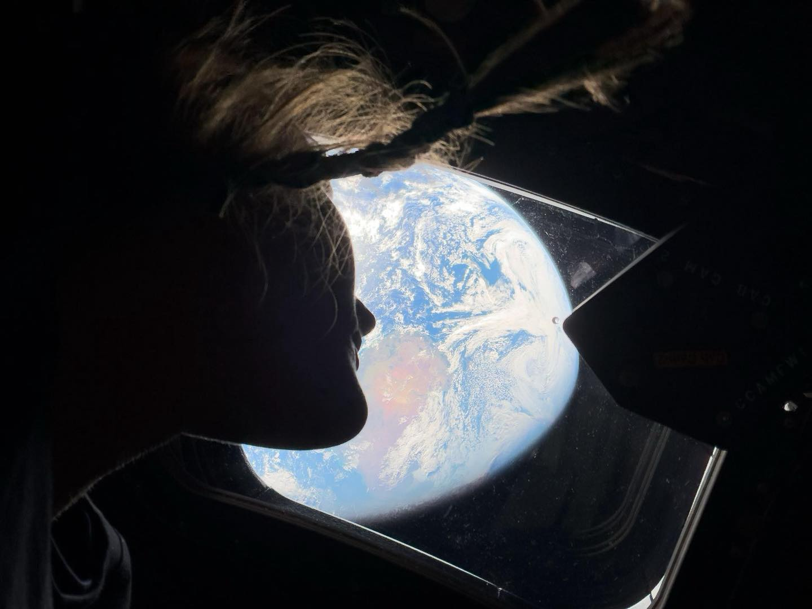

I am a second-year Ph.D. student in the Department of Computer Science at Zhejiang University, advised by Prof. Shuiguang Deng, and I also have the privilege of working with Prof. Hailiang Zhao (ZJU) and Prof. Xueyan Tang (NTU, Singapore). My research is rooted in theoretical algorithm design, with a broader interest in turning rigorous theoretical guarantees into real-world system improvements.

Feel free to reach out if you’d like to discuss papers or algorithms.
Email: naturechenpeng@gmail.com, pgchen@zju.edu.cn